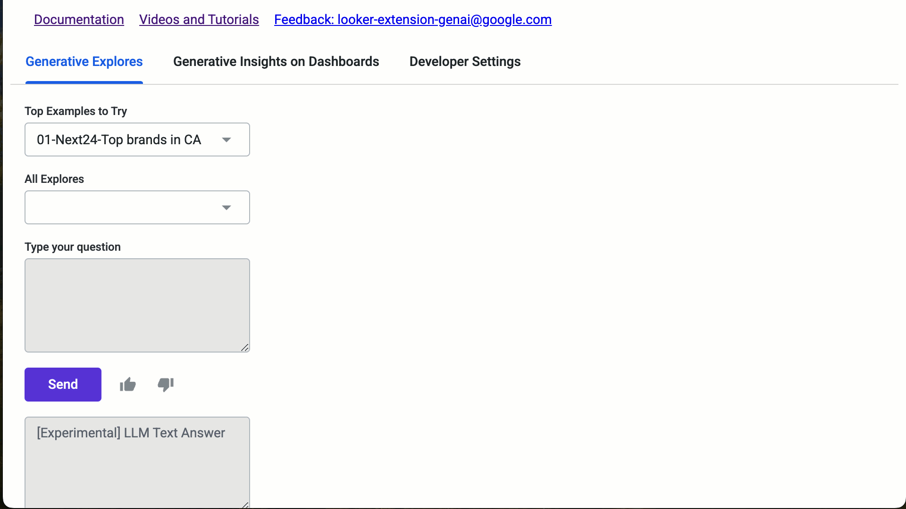
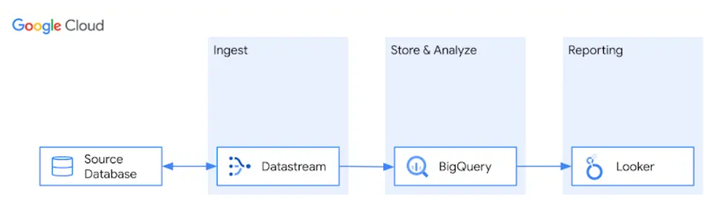

Looker GenAI Extension
En este trabajo en particular implementamos una extensión de GenAI que se integra dentro de Looker. Para realizar esto necesitamos utilizar un Data Warehouse como BigQuery dado que es fundamental para poder implementar la extensión.

Data Base Replica
Esta tarea consta de realizar una migración o réplica de la base de datos de algún cliente desde su instancia actual a BigQuery.